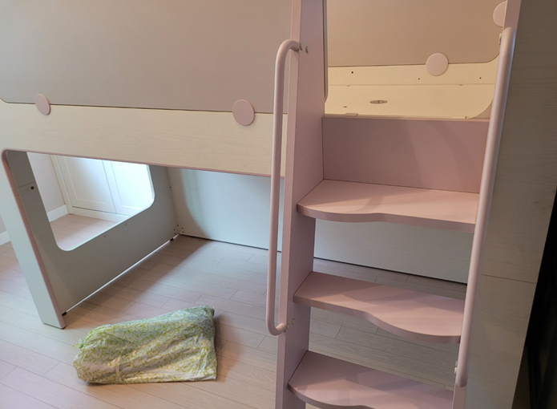
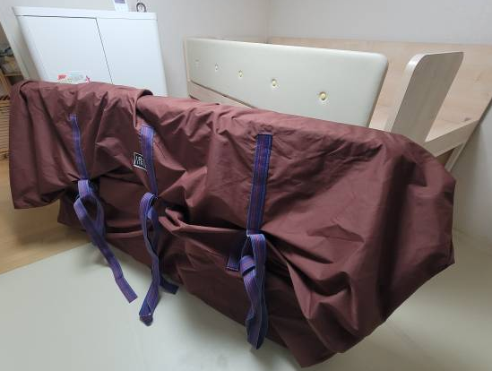
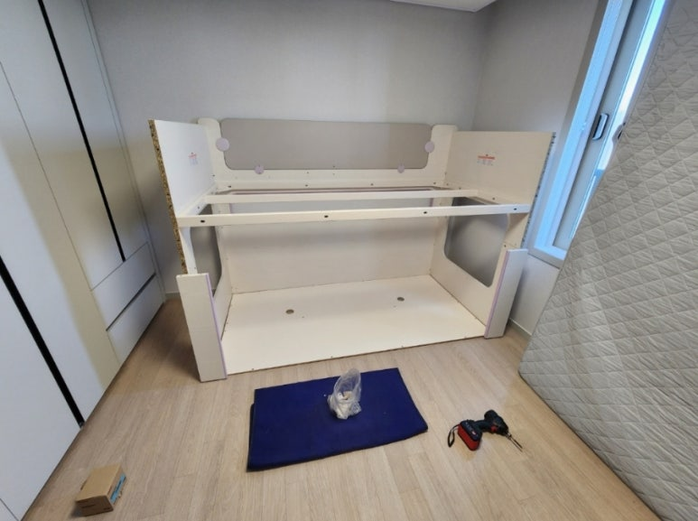
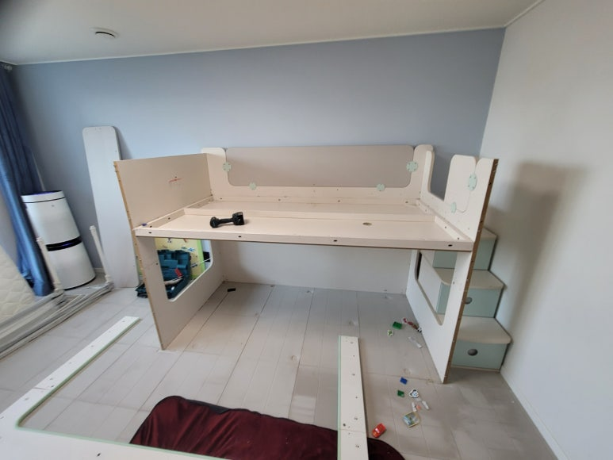
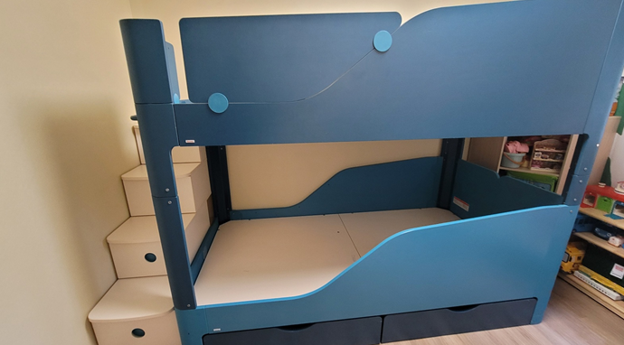
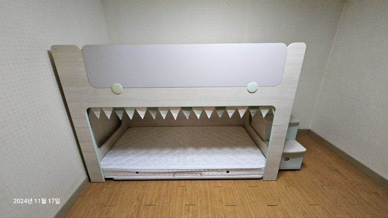
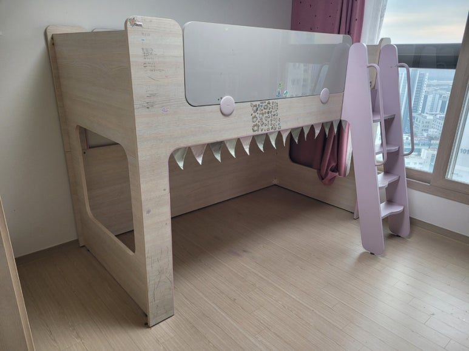
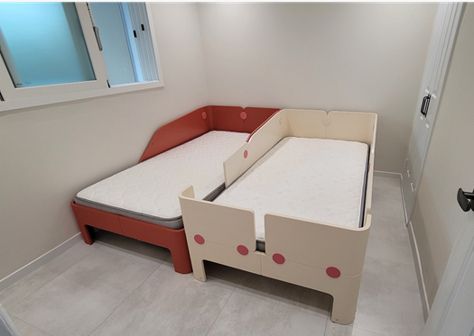
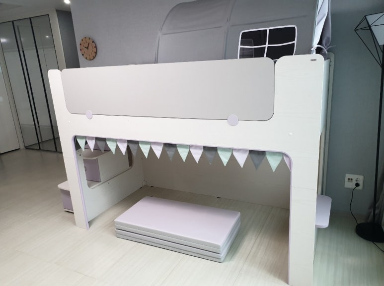
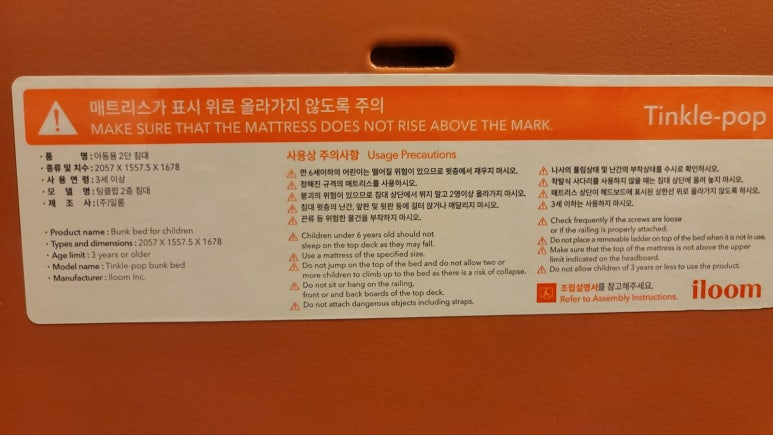

일룸 벙커침대 이전설치
팅클팝 이층침대 분해부터 재조립까지
아이가 쓰던 일룸 벙커침대나 팅클팝 이층침대, 이사할 때 어떻게 옮길지 막막하신가요? 높이가 있고 부품이 많은 침대라 분해와 재조립이 중요해요. 코니처는 일룸 벙커침대와 이층침대를 분해해서 옮기고, 새 방에서 다시 조립해 드려요. 아이 침대인 만큼, 평균 10년 이상 경력의 지역 기사님이 직접 맡아요.

일룸 벙커·이층침대 이전설치
- 일룸 벙커침대15만 원부터
- 일룸 팅클팝 이층침대16만 원부터
표시된 금액은 최소 시작 금액이에요. 가구 크기와 수량, 이전 거리, 층수, 엘리베이터 사용 여부 등 작업과 현장 상황에 따라 금액이 달라져요. 정확한 금액은 사진을 보고 문자로 안내드려요.
현금가 기준이며, 카드 결제나 현금영수증이 필요하면 부가세가 별도예요.
문자 상담 신청하기일룸 벙커침대, 옮길 때 살펴야 할 것
일룸 벙커침대와 팅클팝 이층침대는 아이들이 오르내리는 침대라서, 다시 조립했을 때 단단하게 맞물리는 게 가장 중요해요.
- 계단 수납장과 사다리계단형은 수납장 계단을, 사다리형은 사다리를 따로 분리해서 옮겨요.
- 안전가드위층 안전가드는 아이 안전과 직결돼서 재조립할 때 연결 부위를 꼼꼼히 확인해요.
- 위아래 프레임팅클팝처럼 위아래가 나뉘는 침대는 프레임이 정확히 맞물려야 흔들림이 없어요.
- 새 방 천장 높이벙커침대는 높이가 있어서 새 방 천장 높이를 꼭 알려주세요.
일룸 벙커침대 이전설치 과정
-
분해
매트리스를 내리고 계단, 안전가드, 위층 프레임, 아래층 순서로 분해해요.

-
포장과 운반
분해한 부재를 포장해서 새 방으로 옮겨요. 이사도, 아이 방을 바꾸는 방간이동도 가능해요.

-
재조립
새 방에서 아래층 프레임부터 세우고, 위층과 계단, 안전가드를 연결해요.


-
마무리
매트리스를 올리고 흔들림이 없는지 확인한 뒤 마무리해요.

벙커침대 작업 순서와 방법은 침대 모델과 현장 상황에 따라 기사님과 상담 후 진행돼요.
이층침대를 단층으로 바꾸고 싶다면
아이가 크면서 이층침대를 단층으로 낮춰 쓰거나, 위아래를 나눠 두 방에 따로 놓고 싶을 때가 있어요. 일룸 벙커침대와 팅클팝은 모델에 따라 단층으로 바꿔 설치할 수 있는 경우가 있어요. 이때 쓰지 않는 위층 부재를 1층 폐기장으로 옮기는 것도 함께 상담할 수 있어요. 침대 사진과 원하는 구성을 보내주시면 가능한지 확인해 드려요.
벙커침대 견적에 필요한 정보
- 침대 전체 사진정면과 계단 쪽이 함께 나오게 찍어 주세요. 침대 안쪽 품질표시 라벨이 보이면 함께 찍어 주세요.
- 모델명팅클팝, 캐빈 등 모델명을 아시면 알려주세요. 모르셔도 사진으로 확인할 수 있어요.
- 출발지와 도착지두 지역과 거리, 엘리베이터가 있는지, 몇 층인지 함께 알려주세요.
- 새 방 정보천장 높이와 침대를 놓을 벽 길이를 알려주세요.
벙커침대 옮기기 전 준비
침구와 인형, 위층에 올려 둔 물건은 미리 치워 주세요. 계단 수납장과 하부 서랍 속 물건도 비워 두셔야 분해를 바로 시작할 수 있어요. 커튼이나 텐트처럼 침대에 달아 둔 소품은 따로 떼어 두시면 좋아요. 새 방에서는 침대를 놓을 자리와 천장 조명 위치를 한 번 확인해 주세요.
벙커침대 이전설치가 필요한 경우
다시 조립한 벙커·이층침대






최근 일룸 벙커·이층침대 작업 지역
벙커침대 이전설치는 서울·경기·인천 수도권 어디든 출장해요.
- 신림일룸 벙커침대 · 단층으로 내림 설치, 남는 부재 폐기
- 기흥 → 회기일룸 벙커침대 · 해체 후 이전 재조립
- 연천일룸 벙커침대 · 단층으로 분해 재설치
- 영통일룸 팅클팝 이층침대 · 분해 재조립
- 동탄일룸 벙커침대 · 방간이동 재배치
- 판교일룸 팅클팝 2층침대 · 분해 이사 재조립
- 공덕일룸 벙커침대 · 철거 이사 조립
- 문정일룸 벙커침대 · 분해 조립 이전설치
- 광교일룸 계단형 벙커침대 · 방간이동 해체 재조립
자주 묻는 질문
벙커침대 분해와 재조립을 하루에 하나요?
네, 분해한 날 새 방에서 다시 조립할 수 있어요. 모델과 거리에 따라 일정은 상담할 때 정해요.
팅클팝 위아래를 두 방에 나눠 놓을 수 있나요?
모델과 구성에 따라 가능한 경우가 있어요. 침대 사진과 두 방의 상황을 보내주시면 상담해 드려요.
모델명을 몰라도 상담할 수 있나요?
네, 침대 사진만 보내주셔도 괜찮아요. 침대 안쪽 라벨이 보이면 함께 찍어 주세요.
책상이나 책장도 함께 옮길 수 있나요?
네, 아이 방의 책상과 책장도 함께 문의하실 수 있어요.
벙커침대와 팅클팝은 비용이 왜 다른가요?
모델마다 부재 수와 구조가 달라서 시작 금액이 달라요. 여기에 이동 거리와 층수, 엘리베이터 여부를 더해 정확한 금액을 안내드려요.
벙커침대 이전 견적, 문자로 받기
침대 사진과 새 방 천장 높이, 이사 지역을 보내주세요. 오전 7시부터 오후 6시까지 확인하고 답장드려요.
문자 상담 신청하기